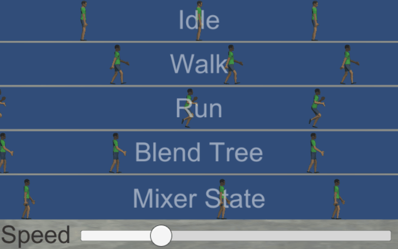

This page needs to be updated for Animancer v4.0.
Pro-Only: Animancer Lite allows you to try out this feature in the Unity Editor, but it will not be available in runtime builds unless you purchase Animancer Pro. See the Feature Comparison for more information.
MixerStates serve the same purpose as Mecanim Blend Trees; they allow you to blend multiple animations based on a parameter. For example, you might blend between Idle, Walk, and Run based on how fast you want the character to move (such as in proportion to how far the user tilts a joystick) so that they animate appropriately for any speed instead of only having a few specific speeds they can move at.
The Locomotion/Linear Blending example demonstrates how to use Mixers and Blend Trees.

Mixers are usually set up in the Inspector using Mixer Transitions, but they can also be created manually.

Choosing a Mixer
There are several different mixer types and you can create your own by inheriting from any of them:
| Mixer Type | Parameter / Thresholds | Interpolation Algorithm | Equivalent Blend Tree |
|---|---|---|---|
ManualMixerState |
none | Manual Weights | Direct |
LinearMixerState |
float |
Linear | 1D |
CartesianMixerState |
Vector2 |
Gradient Band | 2D Freeform Cartesian |
DirectionalMixerState |
Vector2 |
Polar Gradient Band | 2D Freeform Directional |
ManualMixerStates allow you to simply control the AnimancerNode.Weight of each state manually without any automated calculations. This is often useful for additive animations and blend shapes for things like facial expressions.
Other mixers have a Parameter property and Thresholds array which are used to calculate the weight of each state for you. When the Parameter is exactly equal to a particular threshold, the corresponding state will be at exactly 1 weight, while Parameter values between the Thresholds will calculate fractional weights based on the interpolation algorithm being used. You can either specify the thresholds manually or calculate them using MixerState<T>.CalculateThresholds. The AnimancerUtilities class also provides CalculateThresholdsFromAverageVelocityXZ as an extension method for Vector2 based mixers (Cartesian and Directional) to calculate the thresholds based on the average root motion velocity of each state on the X and Z axes. Note that this method needs the “Bake Into Pose” toggle to be disabled for “Root Transform Position (XZ)” in the Import Settings of each AnimationClip in the mixer.
When selecting a 2D mixer, Directional generally offers better interpolation than Cartesian for animations that represent direction such as move forward/back/left/right. Also note that in areas with 180 degrees or more between states the interpolation is ill-defined and will likely have undesirable results; I.E. if you have clips for forward, back, and left, but no right, then you will get odd results if you set the parameter to the right.
MixerStates are a type of AnimancerState with several other differences from regular ClipStates:
- The
Clipproperty will always return null. - States inside an
MixerStateare not generally registered in the internal Dictionary. If you need to access these states directly you must do so via their index in the mixer itself. All inbuilt mixers expose theirStatesas an array. - Since mixers don’t have a duration or time of their own, they don’t actually have an
OnEndcallback but will instead pass on anything they are given to all of their child states.
Manual Creation
If you don't want to use a Mixer Transition, you can create one yourself using code:
- Select a mixer type from the table above and make a
newone. For example,new LinearMixerState. - Call one of the
Initialisemethods on the mixer:
Initialise(portCount)allocates room for the specified number of states which can be filled individually usingCreateStateor by passing the mixer into the constructor orSetParentmethod of any state type. This even lets you nest mixers inside each other.Initialise(clips, thresholds)allocates aClipStatefor each of theclipsand assigns their correspondingthresholds.
- Make sure all states have been assigned thresholds to determine the parameter values where they will be used and how they will blend in relation to other states. This can be done using optional parameters in the
InitialiseandCreateStatemethods, or by callingSetThresholdorSetThresholds. - Store a reference to the mixer so you can set its
Parameterlater on to control its blending.
The following example script uses a LinearMixerState to blend between idle and Run animations based on a Movement Speed slider in the Inspector:
using Animancer;
using UnityEngine;
public sealed class LinearMixerExample : MonoBehaviour
{
[SerializeField] private AnimancerComponent _Animancer;
[SerializeField] private AnimationClip _Idle;
[SerializeField] private AnimationClip _Run;
[SerializeField, Range(0, 1)]
private float _MovementSpeed;
// Keep the mixer after is is created so we can change the Parameter later.
private LinearMixerState _MovementMixer;
private void Awake()
{
// Make a new mixer and connect it to the default layer.
_MovementMixer = new LinearMixerState(_Animancer);
// We could specify custom thresholds in the Initialise call,
// but since we aren't it will use 0 and 1 respectively.
// Other overloads take 3 clips, or an array of any number of clips.
_MovementMixer.Initialise(_Idle, _Run);
// Optionally register the mixer with a key so it
// can be accessed from other scripts using that key.
// A string name:
_MovementMixer.Key = "Movement Mixer";
//var state = _Animancer.States["Movement Mixer"];
// Or use this component itself as the key.
_MovementMixer.Key = this;
//var state = _Animancer.States[this];
// Play the mixer just like a regular clip.
_Animancer.Play(_MovementMixer);
}
private void Update()
{
// Set the mixer's parameter to control its current blending.
_MovementMixer.Parameter = _MovementSpeed;
}
}
This screenshot shows the AnimancerComponent Inspector for the example script in Play Mode. Unlike a regular ClipState that plays a single animation, the LinearMixerState shows its child states with the ability to expand the details of both the mixer and child states.
Blend Trees vs. Mixers
- Mixers are created dynamically at runtime. This means they are more flexible in how they can be used. You can directly access the details of individual states and you can create your own mixer types that inherit from any of the existing ones to implement custom blending algorithms or add other features.
- Blend Trees are created manually in the Unity Editor. They have a user-friendly interface for setting up their structure and previewing the animations, however their structure cannot be changed at runtime and they are much harder to debug since you have no access to their internals. You can play and control Blend Trees in Animancer using Parameter Controller States.
Foot Phase Synchronization
When mixing animations of different lengths, they will get out of sync if left to play normally. For example, it could end up with a Walk animation having the left foot on the ground while the Run animation has the right foot on the ground, which would not give a realistic result. This causes obvious issues as you can see below where the character is walking fine about half the time while the cycles are close to each other but every few steps he does a strange shuffle that looks very unnatural.

Blend Trees solve this issue using a technique known as Foot Phase Synchronization which is described in the following video at 17:10.
Foot Phase Synchronization occurs automatically as part of the Blend Tree. You can't disable it or even tweak its settings at all, but most of the time there is no need to do so because it works quite reliably.
It would be possible to implement Foot Phase Synchronisation in Mixers (and you could do it yourself by inheriting from any of the existing mixer types), but Unity's implementation is not exposed publically so it would need to be entirely re-implemented from scratch. It would need the AnimationClips to be analysed to determine their phases in the Unity Editor since their curves can't be accessed at runtime and then it would need additional logic to adjust speeds at runtime based on that analysis. This could potentially be added to Animancer in the future, but for now it has been deemed to require far too much effort to achieve something that can already be done using a Blend Tree.
Linear Root Motion Interpolation
Blend Trees and Mixer States also have a distinct difference in the weights they calculate for their individual states. The video below shows the parameter slider at 0.25, which is exactly halfway between the thresholds of Idle (0) and Walk (0.5).
- In the
MixerStatethis means both animations are given 0.5Weighteach, causing the character to walk at half speed as you would expect. You can see this most clearly by measuring the distance the character travels before the video loops. - But in the Blend Tree the result is much slower. We have no way of seeing the actual
Weights it is using, though judging by how far the hands move it appears to be very close to the expected 0.5. However, theSpeedis clearly much slower and the Root Motion it applies is even slower than that to the extent that you can't actually see the character moving in this video (it's moving less than 0.001 meters per second). This is not caused by Animancer or the Playables API, the exact same thing occurs when using an Animator Controller normally.

The difference in Speed is likely a direct result of the Foot Phase Synchronization system, however the reason for the Root Motion to be even slower than that is unknown. This bug has been acknowledged by Unity, however they are not willing to explain the cause and do not intend to fix it because people already expect it to work this way ...